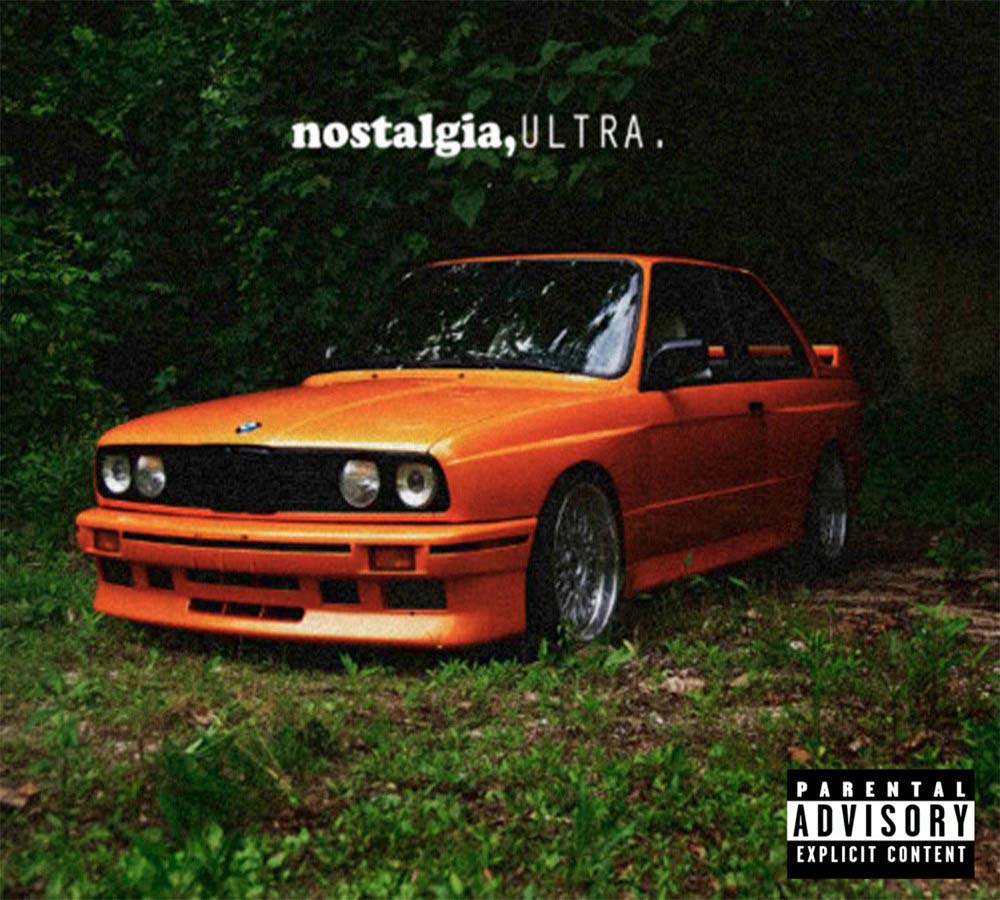

nostalgia, ULTRA
RELEASE DATE: February 16, 2011
GENRE:
LENGTH: 42:06

- Street Fighter
- Strawberry Swing
- Novacane*
- We All Try
- Bitches Talkin' (Metal Gear Solid)
- Songs For Women
- Lovecrimes
- Goldeneye
- There Will Be Tears
- Swim Good*
- Dust
- American Wedding
- Soul Calibur
- Nature Feels
TRACKLIST
An * denotes a track that was released as a single
Nostalgia, Ultra has become one of the most recognizable and important mixtapes in recent music history. Ocean chose an iconic BMW e30 to sport the cover, and released it on his blog in 2011. The tracklist is loaded with samples from famous artists such as The Eagles, Radiohead, and Coldplay. None of the samples were cleared for the project, and hence it continues to only be available online as opposed to streaming platforms. His sound changed greatly from collaborations with Odd Future, into a soulful and melodic archetype that is supported by incredible vocal prowess.
Although the mixtape was slated for release by Def Jam Records, this was stunted by a lawsuit filed by The Eagles. Two singles, Novacane and Swimgood, ended up being released as EPs and became some of his most iconic songs. The mixtape was revered by critics and Kanye West enjoyed it so much that it resulted in Frank's presence on the 2011 Kanye & Jay-Z album, Watch the Throne.
To this day, fans go back to Nostalgia, Ultra for its nostalgic verses shrouded in beautiful samples. It was the record that truly put Frank on the map.
Song Spotlight: Songs For Women
Songs For Women is the 6th track on Nostalgia, Ultra. It features a verse from greatly acclaimed Outkast rapper Andre 3000.